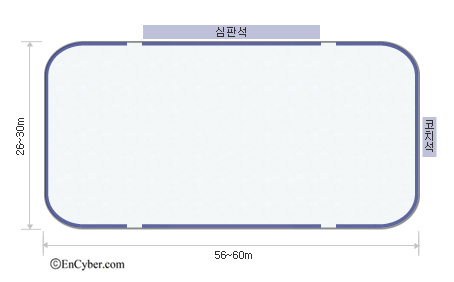
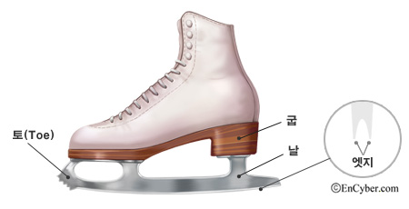

경기장 및 경기 용구

경기장의 국제 규격은 길이 56~60m, 너비 26~30m의 직사각형이다.
ISU가 주관하는 선수권대회와 동계올림픽대회, 동계유스올림픽대회는
2개의 실내 링크가 필요하며, 링크는 반드시 난방이 가능하여야 한다.
빙판의 얼음 두께는 5㎝로, 200차례에 걸쳐 0.2㎜씩 적층 방식으로 얼려 영하 3~4℃를 유지한다.

스케이트의 앞부분인 토(toe)는 점프를 할 때 편리하도록 톱니로 되어
있으며, 스케이트의 날에는 오목한 홈이 있다.
ISU의 규정에 따르면, 날의
양 에지(edge) 사이를 측정하였을 때 날의 너비가 변하지 않게 단면이
오목해지도록 같아야 하지만, 단면이 약간 좁아지거나 가늘게 하는 것은 허용된다.
의상은 운동경기에 적합하고 기품이 있어야 하며,
남자는 바지만 허용되고 타이즈는 허용되지 않는다.